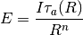
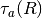
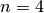
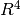
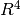

Utility Functions¶
Overview¶
This module provides various utility functions for radiometry calculations. Functions are provided for a maximally flat spectral filter, a simple photon detector spectral response, effective value calculation, conversion of spectral domain variables between [um], [cm^-1] and [Hz], conversion of spectral density quantities between [um], [cm^-1] and [Hz] and spectral convolution.
See the __main__ function for examples of use.
This package was partly developed to provide additional material in support of students and readers of the book Electro-Optical System Analysis and Design: A Radiometry Perspective, Cornelius J. Willers, ISBN 9780819495693, SPIE Monograph Volume PM236, SPIE Press, 2013. http://spie.org/x648.html?product_id=2021423&origin_id=x646
Module functions¶
- pyradi.ryutils.abshumidity(T, equationSelect=1)¶
Absolute humidity [g/m3] for temperature in [K] between 248 K and 342 K.
This function provides two similar equations, but with different constants.
- Args:
- temperature (np.array[N,] or [N,1]): in [K].
- Returns:
- absolute humidity (np.array[N,] or [N,1]): abs humidity in [g/m3]
- Raises:
- No exception is raised.
- pyradi.ryutils.sfilter(spectral, center, width, exponent=6, taupass=1.0, taustop=0.0, filtertype='bandpass')¶
Calculate a symmetrical filter response of shape exp(-x^n)
Given a number of parameters, calculates maximally flat, symmetrical transmittance. The function parameters controls the width, pass-band and stop-band transmittance and sharpness of cutoff. This function is not meant to replace the use of properly measured filter responses, but rather serves as a starting point if no other information is available. This function does not calculate ripple in the pass-band or cut-off band.
Filter types supported include band pass, high (long) pass and low (short) pass filters. High pass filters have maximal transmittance for all spectral values higher than the central value. Low pass filters have maximal transmittance for all spectral values lower than the central value.
- Args:
- spectral (np.array[N,] or [N,1]): spectral vector in [um] or [cm-1].center (float): central value for filter passbandwidth (float): proportional to width of filter passbandexponent (float): even integer, define the sharpness of cutoff.If exponent=2 then gaussianIf exponent=infinity then squaretaupass (float): the transmittance in the pass band (assumed constant)taustop (float): peak transmittance in the stop band (assumed constant)filtertype (string): filter type, one of ‘bandpass’, ‘lowpass’ or ‘highpass’
- Returns:
- transmittance (np.array[N,] or [N,1]): transmittances at “spectral” intervals.
- Raises:
- No exception is raised.If an invalid filter type is specified, return None.
- pyradi.ryutils.responsivity(wavelength, lwavepeak, cuton=1, cutoff=20, scaling=1.0)¶
Calculate a photon detector wavelength spectral responsivity
Given a number of parameters, calculates a shape that is somewhat similar to a photon detector spectral response, on wavelength scale. The function parameters controls the cutoff wavelength and shape of the response. This function is not meant to replace the use of properly measured spectral responses, but rather serves as a starting point if no other information is available.
- Args:
- wavelength (np.array[N,] or [N,1]): vector in [um].lwavepeak (float): approximate wavelength at peak responsecutoff (float): cutoff strength beyond peak, 5 < cutoff < 50cuton (float): cuton sharpness below peak, 0.5 < cuton < 5scaling (float): scaling factor
- Returns:
- responsivity (np.array[N,] or [N,1]): responsivity at wavelength intervals.
- Raises:
- No exception is raised.
- pyradi.ryutils.effectiveValue(spectraldomain, spectralToProcess, spectralBaseline)¶
Normalise a spectral quantity to a scalar, using a weighted mapping by another spectral quantity.
Effectivevalue = integral(spectralToProcess * spectralBaseline) / integral( spectralBaseline)
The data in spectralToProcess and spectralBaseline must both be sampled at the same domain values as specified in spectraldomain.
The integral is calculated with numpy/scipy trapz trapezoidal integration function.
- Args:
- inspectraldomain (np.array[N,] or [N,1]): spectral domain in wavelength, frequency or wavenumber.spectralToProcess (np.array[N,] or [N,1]): spectral quantity to be normalisedspectralBaseline (np.array[N,] or [N,1]): spectral serving as baseline for normalisation
- Returns:
- (float): effective valueReturns None if there is a problem
- Raises:
- No exception is raised.
- pyradi.ryutils.convertSpectralDomain(inspectraldomain, type='')¶
Convert spectral domains, i.e. between wavelength [um], wavenummber [cm^-1] and frequency [Hz]
In string variable type, the ‘from’ domain and ‘to’ domains are indicated each with a single letter: ‘f’ for temporal frequency, ‘l’ for wavelength and ‘n’ for wavenumber The ‘from’ domain is the first letter and the ‘to’ domain the second letter.
Note that the ‘to’ domain vector is a direct conversion of the ‘from’ domain to the ‘to’ domain (not interpolated or otherwise sampled.
- Args:
- inspectraldomain (np.array[N,] or [N,1]): spectral domain in wavelength, frequency or wavenumber.wavelength vector in [um]frequency vector in [Hz]wavenumber vector in [cm^-1]type (string): specify from and to domains:‘lf’ convert from wavelength to per frequency‘ln’ convert from wavelength to per wavenumber‘fl’ convert from frequency to per wavelength‘fn’ convert from frequency to per wavenumber‘nl’ convert from wavenumber to per wavelength‘nf’ convert from wavenumber to per frequency
- Returns:
- [N,1]: outspectraldomainReturns zero length array if type is illegal, i.e. not one of the expected values
- Raises:
- No exception is raised.
- pyradi.ryutils.convertSpectralDensity(inspectraldomain, inspectralquantity, type='')¶
Convert spectral density quantities, i.e. between W/(m^2.um), W/(m^2.cm^-1) and W/(m^2.Hz). Return always positive.
In string variable type, the ‘from’ domain and ‘to’ domains are indicated each with a single letter: ‘f’ for temporal frequency, ‘w’ for wavelength and ‘’n’ for wavenumber The ‘from’ domain is the first letter and the ‘to’ domain the second letter.
The return values from this function are always positive, i.e. not mathematically correct, but positive in the sense of radiance density.
The spectral density quantity input is given as a two vectors: the domain value vector and the density quantity vector. The output of the function is also two vectors, i.e. the ‘to’ domain value vector and the ‘to’ spectral density. Note that the ‘to’ domain vector is a direct conversion of the ‘from’ domain to the ‘to’ domain (not interpolated or otherwise sampled).
- Args:
- inspectraldomain (np.array[N,] or [N,1]): spectral domain in wavelength, frequency or wavenumber.inspectralquantity (np.array[N,] or [N,1]): spectral density in same domain as domain vector above.wavelength vector in [um]frequency vector in [Hz]wavenumber vector in [cm^-1]type (string): specify from and to domains:‘lf’ convert from per wavelength interval density to per frequency interval density‘ln’ convert from per wavelength interval density to per wavenumber interval density‘fl’ convert from per frequency interval density to per wavelength interval density‘fn’ convert from per frequency interval density to per wavenumber interval density‘nl’ convert from per wavenumber interval density to per wavelength interval density‘nf’ convert from per wavenumber interval density to per frequency interval density
- Returns:
- ([N,1],[N,1]): outspectraldomain and outspectralquantityReturns zero length arrays is type is illegal, i.e. not one of the expected values
- Raises:
- No exception is raised.
- pyradi.ryutils.convolve(inspectral, samplingresolution, inwinwidth, outwinwidth, windowtype=<function bartlett at 0x04CC4A70>)¶
Convolve (non-circular) a spectral variable with a window function, given the input resolution and input and output window widths.
This function is normally used on wavenumber-domain spectral data. The spectral data is assumed sampled at samplingresolution wavenumber intervals. The inwinwidth and outwinwidth window function widths are full width half-max (FWHM) for the window functions for the inspectral and returned spectral variables, respectively. The Bartlett function is used as default, but the user can use a different function. The Bartlett function is a triangular function reaching zero at the ends. Window functio width is correct for Bartlett and only approximate for other window functions.
- Args:
- inspectral (np.array[N,] or [N,1]): vector in [cm-1].samplingresolution (float): wavenumber interval between inspectral samplesinwinwidth (float): FWHM window width of the input spectral vectoroutwinwidth (float): FWHM window width of the output spectral vectorwindowtype (function): name of a numpy/scipy function for the window function
- Returns:
- outspectral (np.array[N,]): input vector, filtered to new window width.windowfn (np.array[N,]): The window function used.
- Raises:
- No exception is raised.
- pyradi.ryutils.rangeEquation(Intensity, Irradiance, rangeTab, tauTab, rangeGuess=1, n=2)¶
Solve the range equation for arbitrary transmittance vs range.
This function solve for the range
 in the range equation
in the range equation
where
 is the threshold irradiance in [W/m2],
and
is the threshold irradiance in [W/m2],
and  is the intensity in [W/sr]. This range equation holds for
the case where the target is smaller than the field of view.
is the intensity in [W/sr]. This range equation holds for
the case where the target is smaller than the field of view.The range
must be in [m], and 
is calculated from a lookup table of atmospheric transmittance vs. range.
The transmittance lookup table can be calculated from the simple Bouguer law,
or it can have any abritrary shape, provided it decreases with increasing range.
The user supplies the lookup table in the form of an array of range values and
an associated array of transmittance values. The range values need not be on
constant linear range increment.The parameter

 (default value) the general case of a radiating source
smaller than the field of view.
(default value) the general case of a radiating source
smaller than the field of view.-  the special case of a laser rangefinder illuminating a target
smaller than the field of view, viewed against the sky. In this case there
is an
 attenuation from the laser to the source and another
attenuation from the source to the receiver, hence
 overall.
attenuation from the laser to the source and another
attenuation from the source to the receiver, hence
 overall.
If the range solution is doubtful (e.g. not a trustworthy solution) the returned value is made negative.
- Args:
- Intensity (float or np.array[N,] or [N,1]): in [W/sr].Irradiance (float or np.array[N,] or [N,1]): in [W/m2].rangeTab (np.array[N,] or [N,1]): range vector for lookuptauTab (np.array[N,] or [N,1]): transmittance vector for lookuprangeGuess (float): starting value range estimaten (float): range power (2 or 4)
- Returns:
- range (float or np.array[N,] or [N,1]): Solution to the range equation in [m]. Value is negative if calculated range exceeds the top value in range table, or if calculated range is too near the lower resolution limit.
- Raises:
- No exception is raised.
- pyradi.ryutils.detectThresholdToNoise(pulseWidth, FAR)¶
Solve for threshold to noise ratio, given pulse width and FAR, for matched filter.
Using the theory of matched filter design, calculate the threshold to noise ratio, to achieve a required false alarm rate.
References:
“Electro-optics handbook,” Tech. Rep. EOH-11, RCA, 1974. RCA Technical Series Publication.
- Hippenstiel, Detection Theory: Applications and Digital Signal Pro-cessing, CRC Press, 2002
- Args:
- pulseWidth (float): the signal pulse width in [s].FAR (float): the false alarm rate in [alarms/s]
- Returns:
- range (float): threshold to noise ratio
- Raises:
- No exception is raised.
- pyradi.ryutils.detectSignalToNoise(ThresholdToNoise, pD)¶
Solve for signal to noise ratio, given the threshold to noise ratio and probability of detection.
Using the theory of matched filter design, calculate the signal to noise ratio, to achieve a required probability of detection.
References:
“Electro-optics handbook,” Tech. Rep. EOH-11, RCA, 1974. RCA Technical Series Publication.
- Hippenstiel, Detection Theory: Applications and Digital Signal Pro-cessing, CRC Press, 2002
- Args:
- ThresholdToNoise (float): the threshold to noise ratio [-]pD (float): the probability of detection [-]
- Returns:
- range (float): signal to noise ratio
- Raises:
- No exception is raised.